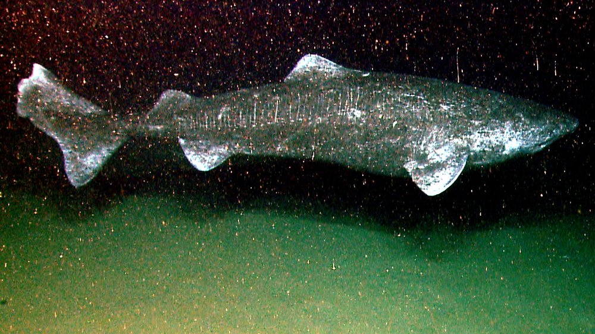
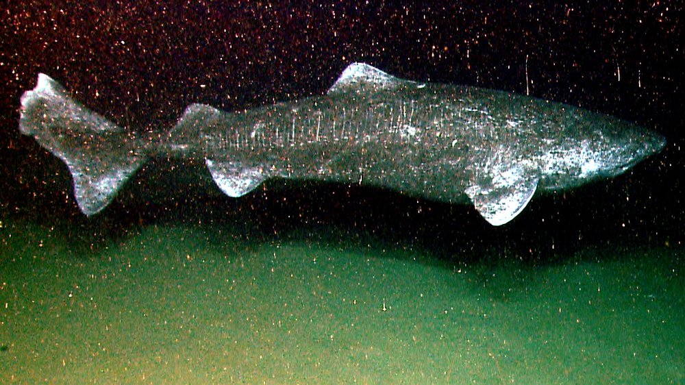

Sharks are a group of elasmobranch fish characterized by a cartilaginous skeleton, five to seven gill slits on the sides of the head, and pectoral fins that are not fused to the head.
Modern sharks are classified within the clade Selachimorpha (or Selachii) and are the sister group to the Batoidea (rays and kin). Some sources extend the term "shark" as an informal
category including extinct members of Chondrichthyes (cartilaginous fish) with a shark-like morphology, such as hybodonts. Shark-like chondrichthyans such as Cladoselache and Doliodus
first appeared in the Devonian Period (419–359 million years), though some fossilized chondrichthyan-like scales are as old as the Late Ordovician (458–444 million years ago). The earliest
confirmed modern sharks (selachimorphs) are known from the Early Jurassic around 200 million years ago, with the oldest known member being Agaleus, though records of true sharks may extend back
as far as the Permian.
Sharks range in size from the small dwarf lanternshark (Etmopterus perryi), a deep sea species that is only 17 centimetres (6.7 in) in length, to the whale shark (Rhincodon typus),
the largest fish in the world, which reaches approximately 12 metres (40 ft) in length. They are found in all seas and are common to depths up to 2,000 metres (6,600 ft). They generally do not
live in freshwater, although there are a few known exceptions, such as the bull shark and the river sharks, which can be found in both seawater and freshwater, and the Ganges shark, which lives only
in freshwater. Sharks have a covering of dermal denticles that protects their skin from damage and parasites in addition to improving their fluid dynamics. They have numerous sets of replaceable teeth.


 
